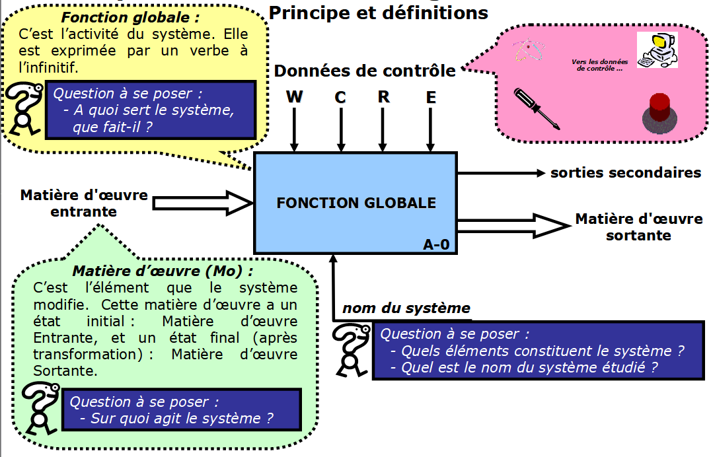
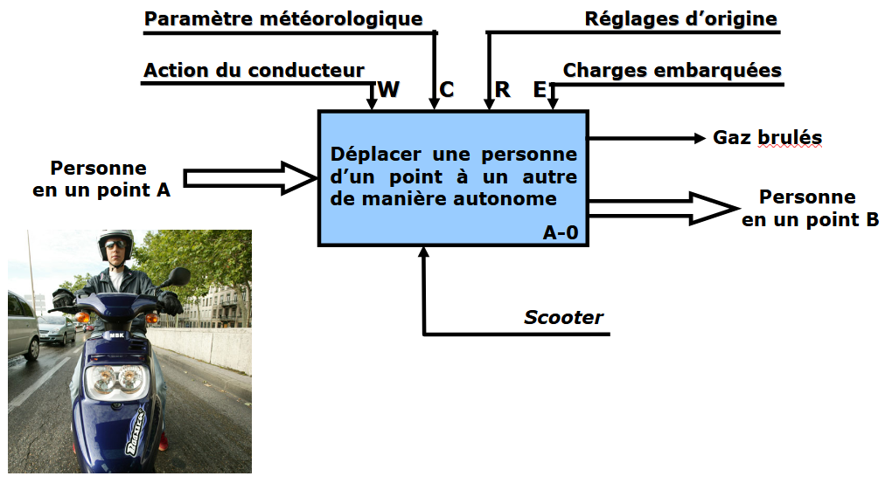

Analyse descendante ou diagramme S.A.D.T. (Structured Analysis Design Technic)
L’analyse fonctionnelle descendante permet de comprendre comment fonctionne un système.
NIVEAU A-0 : Ce niveau d'analyse représente l'objet dans son ensemble suivant un point de vue et une phase précise et énonce la fonction globale.
SADT

Données de contrôle : Elles enclenchent, modifient et caractérisent la fonction du système. Elles ne sont pas modifiables par le système. Il existe quatre catégories de données de contrôle :
Question à se poser : De quoi a-t-on besoin pour faire la transformation ?
Énergie (W) : Énergie électrique, pneumatique, hydraulique, mécanique, humaine, etc…
Configuration (C) : Programmation d’un ordinateur, d’un automate, etc…
Réglage (R) : Réglage de vitesses, de paramètres électriques, etc…
Exploitation (E) (commande) : Données opérateur ou matériel (Marche/Arrêt, départ cycle, etc…)
Données de contrôle
Données de contrôle : Elles enclenchent, modifient et caractérisent la fonction du système. Elles ne sont pas modifiables par le système.
Question à se poser : De quoi a-t-on besoin pour faire la transformation ?
Il existe quatre catégories de données de contrôle :
Énergie (W) : Énergie électrique, pneumatique, hydraulique, mécanique, humaine, etc…
Configuration (C) : Programmation d’un ordinateur, d’un automate, etc…
Réglage (R) : Réglage de vitesses, de paramètres électriques, etc…
Exploitation (E) (commande) : Données opérateur ou matériel (Marche/Arrêt, départ cycle, etc…)
Exemple Scooter
